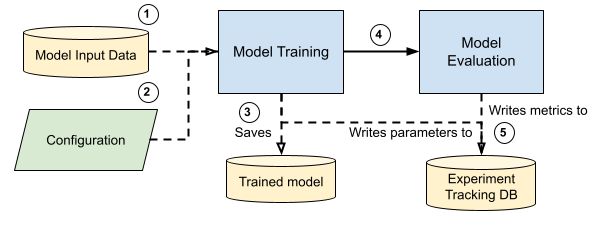

Training Pipeline#
Overview#
This guide outlines the architecture and components of the training data pipeline, designed to be modular, flexible, and easily adaptable to either Ordered Model or Explainable Boosting Machine. It is divided mainly into Model Training and Model Evaluation tasks.
Pipeline Design#
Design Considerations#
Modular Design: Each component is modular for easy maintenance and updates.
Decoupling: Pipeline stages are designed to work independently, allowing for easier testing and modifications.
Configurability: Most components are configurable through config files, allowing for easy adjustments.
Flowchart#
The diagram below provides a high-level overview of the training pipeline’s process flow.

Model input data from
data/06_model_specific_preprocessingis used in model training and model evaluation module.Pipeline parameters and model hyperparameters can be configured in
parameters.ymlandmodel_training.ymlrespectively.Model Training module will generate model weights that is stored in
modelsfolder.Model Evaluation module will use model weights from
modelsfolder and data fromdata/06_model_specific_preprocessingto generate evaluation matrics stored indata/07_model_evaluation(optional) If ML Flow is enabled, MLflow artefacts (model parameters and metrics) will be stored in
mlrunsfolder.
Choice of Models#
Model |
Description |
Repository |
|---|---|---|
Ordered Model |
Ordered Model uses ordinal regression which is a statistical technique that is used to predict behavior of ordinal level dependent variables with a set of independent variables. The dependent variable is the order response category variable and the independent variable may be categorical or continuous. |
|
Explainable Boosting Machine (EBM) |
Explainable Boosting Machine (EBM) is a tree-based, cyclic gradient boosting Generalized Additive Model with automatic interaction detection. EBMs are often as accurate as state-of-the-art blackbox models while remaining completely interpretable. Although EBMs are often slower to train than other modern algorithms, EBMs are extremely compact and fast at prediction time. |
Training Pipeline Configuration#
Key Parameters in the parameters.yml File#
Parameter |
Type |
Description |
Default Value |
|---|---|---|---|
model |
|
Choice of model to train. 2 options: |
|
split_approach_source |
|
Choice of cross validation data splits used. Note: this split approach should be the same as specified during |
|
fold |
|
Cross validation fold to be used for model training and evaluation. Note that |
|
enable_mlflow |
|
|
|
is_remote_mlflow |
|
|
|
tracking_uri |
|
HTTP Server hosting an MLflow tracking server. |
|
experiment_name_prefix |
|
Name of model experiment |
|
Model Hyperparameters in the model_training.yml File#
OrderedModel#
Parameter |
Type |
Description |
Default Value |
|---|---|---|---|
distr |
|
|
|
method |
|
The method determines which solver from scipy.optimize is used. Refer HERE for more infomation. |
|
max_iter |
|
The maximum number of iterations to perform. |
|
Explainable Boosting Machine (EBM)#
Refer to the InterpretML API documentation for the complete list of hyperparameters.
Parameter |
Type |
Description |
Default Value |
|---|---|---|---|
outer_bags |
|
Number of outer bags. Outer bags are used to generate error bounds and help with smoothing the graphs. |
|
inner_bags |
|
Number of inner bags. 0 turns off inner bagging. |
|
learning_rate |
|
Learning rate for boosting. |
|
interactions |
|
Interaction terms to be included in the model. |
|
max_leaves |
|
Maximum number of leaves allowed in each tree. |
|
max_bins |
|
Max number of bins per feature for the main effects stage |
|
min_samples_leaf |
|
Minimum number of samples allowed in the leaves. |
|
Model Input Data Definition#
The training pipeline accepts data generated from the data pipeline in 06_model_specific_preprocessing.
Column |
Type |
|---|---|
maximum_temperature_c |
|
factor |
|
name_counts |
|
is_name_start |
|
is_name_end |
|
is_weekday |
|
is_school_holiday |
|
is_public_holiday |
|
is_daily_rainfall_total_mm |
|
is_pandemic_restrictions |
|
lag_9_proxyrevenue |
|
lag_14_proxyrevenue |
|
lag_9_sma_7_days_proxyrevenue |
|
lag_mean_1_week_proxyrevenue |
|
lag_mean_2_week_proxyrevenue |
|
This data definition is accurate for the trained model weights released on 19 October 2023.
How to Run#
The training pipeline can be executed using the two methods outlined below.
1. Batch Script (Docker Container)#
Prerequisites#
Ensure
data,conf,models,logsandmlrunsfolders are present in the directory where docker image is running.If you want to train
ordered_modelorebm, please ensure06_model_specific_preprocessing/ordered_modelor06_model_specific_preprocessing/ebm_modelfolders are present.
The correct
image_nameanddocker_registry(optional) should be defined inrun_model_training.bat.
What run_model_training.bat does#
Pulls training pipeline Docker image from Docker registry (optional).
Runs training pipeline Docker image and mount
data,conf,models,logsandmlrunsfolders as persistent volumes.If ML Flow is installed, script will run
mlflow uion local machine and experiment tracking can be observed inhttp://127.0.0.1:5000on local machine.
Executing the script#
Run the following command in your terminal window to execute run_model_training.bat:
# windows powershell
.\scripts\run_model_training.bat
# linux bash
scripts/run_model_training.bat
You should see output similar to the below:
Status: Image is up to date for registry.aisingapore.net/100e-bipo/bipo-training-pipeline:0.1.2
registry.aisingapore.net/100e-bipo/bipo-training-pipeline:0.1.2
"Successfully pull image: registry.aisingapore.net/100e-bipo/bipo-training-pipeline:0.1.2"
"Starting docker run with image: registry.aisingapore.net/100e-bipo/bipo-training-pipeline:0.1.2 "
16cfe16e9f25993737c29b3b3ffb45c138a260d5c5e517dc27d37d711b4e7dfe
"Training Pipeline Docker Container run successfully"
"mlflow is installed on your local environment. Running mlflow"
INFO:waitress:Serving on http://127.0.0.1:5000
2. Kedro Command#
Prerequisites#
Ensure that Kedro is installed in the Conda environment on your local machine.
data/06_model_specific_preprocessingfiles are required.
Executing the script#
Run the following commands in your terminal window, which specifies the pipeline argument as training_pipeline to run the training pipeline.
kedro run --pipeline=training_pipeline
You should see output similar to the below:
18/10/2023 12:46 | kedro.framework.session.session | INFO | Kedro project kedro_docker
18/10/2023 12:46 | kedro.io.data_catalog | INFO | Loading data from 'ebm.model_specific_preprocessing_validation' (PartitionedDataset)...
.
.
.
18/10/2023 12:47 | kedro.io.data_catalog | INFO | Saving data to 'ebm.model_evaluation_val_result' (JSONDataSet)...
18/10/2023 12:47 | kedro.runner.sequential_runner | INFO | Completed 7 out of 7 tasks
18/10/2023 12:47 | kedro.runner.sequential_runner | INFO | Pipeline execution completed successfully.
Model Evaluation#
The table below summarises the metrics logged by the training pipeline during the model evaluation stage.
Metrics |
Description |
|---|---|
Accuracy |
The measure of the overall correctness of a model. It represents the ratio of correctly predicted instances to the total instances in the dataset. |
Precision |
The measure of the accuracy of positive predictions made by the model. It’s the ratio of true positive predictions to all positive predictions made by the model |
Recall |
Recall measures the ability of a model to identify all relevant instances, specifically true positives. It’s the ratio of true positives to all actual positive instances in the dataset. |
F1 Score |
Harmonic mean of precision and recall. It provides a balanced measure of model performance, taking into account both false positives and false negatives. |
File Structure in Container#
The following file structure depicts the key directories and files contained in the containerised training submodule. This is not the same directory with the host computer on which Docker is running.
├──/app/bipo_demand_forecasting/
├── pyproject.toml
├── conf/ (mounted)
├── data/ (mounted)
├── mlruns/ (mounted)
├── models/ (mounted)
├── logs/ (mounted)
│ ├── info.log
│ └── error.log
└── src/
├── bipo/
│ ├── pipelines/
│ │ └── ...
├── requirements.txt
└── utils.py